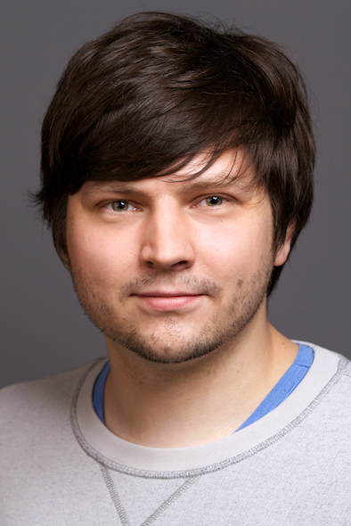
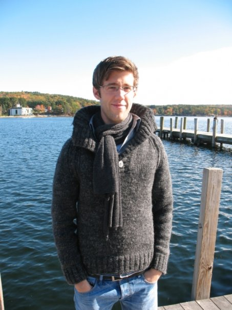

Invited Speakers
Dmitry Nedospasov

Biography
Dmitry Nedospasov is a PhD student and researcher in the field of IC security at the Security in Telecommunications (SECT) research group at the Berlin University of Technology (TU Berlin) and the Telekom Innovation Laboratories. He is also part of the Helmholtz Research school on Security Technologies (HRS ST). Dmitry's research interests include hardware security and IC reverse-engineering as well as physical attacks against ICs and embedded systems. His academic research focuses on developing new and novel techniques for semi and fully-invasive IC analysis. These techniques generally target the IC backside and are difficult to mitigate. Most recently, Dmitry has been involved in identifying vulnerabilities in implementations of Physically Unclonable Functions (PUFs).Talk: Spatially Resolved Side Channel Analysis
Initially, Side-Channel Analysis (SCA) was particularly effective as low-cost, non-invasive blackbox analysis techniques. However, with the advent of SCA countermeasures, their impact has been greatly reduced. Countermeasures generally prevent data leakage on system level. However, today, the most effective attacks are semi-invasive and fully-invasive in nature and utilize spatial resolution to circumvent such countermeasures. For example, Photonic Emission Analysis (PEA), Laser Probing and Voltage Contrast Microscopy can be used to recover data from the target. Moreover, fault injection makes it possible to change the data at runtime using techniques such as laser glitching and microprobing. Though these attacks can circumvent many device countermeasures, they require additional reverse-engineering as they target specific signals on the device. As countermeasures continue to improve, the cost of performing SCA goes up as well. However, the surplus Failure Analysis equipment market is driving down the price of performing semi- and fully-invasive techqniques. Moreover, the reverse-engineering process can be automated in software, eliminating the amount of effort needed to find relevant signals on the device. As a result, semi- and fully-invasive analysis techniques are becoming far more attractive.Sebastian Faust
